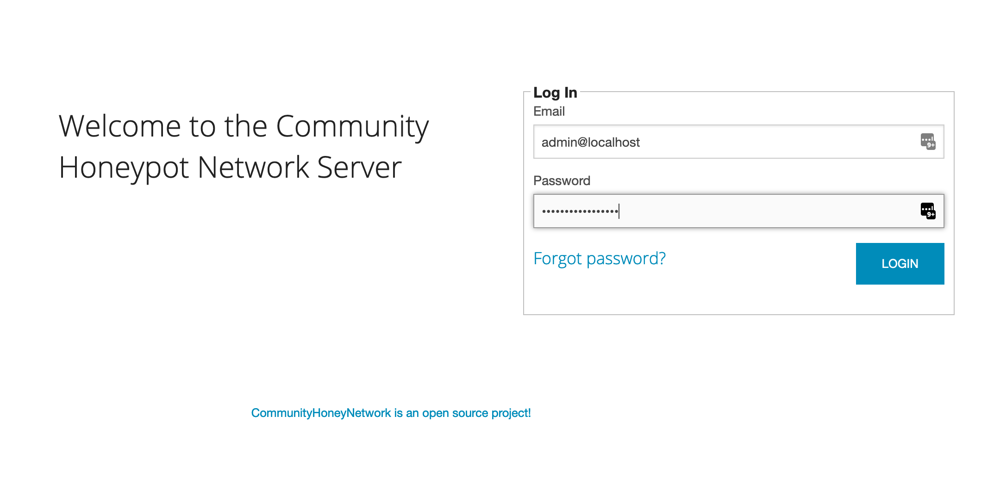

Configuring and Exploring CHN Server Containers
Please Note: All the following docker-compose commands must be run from the directory which contains the
docker-compose.yml file, in our workshop this should be /opt/chnserver. If you need to change to this directory at
any point, simply issue the command:
cd /opt/chnserver
Running Containers
Once CHN Server is running, you can check the status of your containers with the following docker-compose command:
docker-compose ps
Seeing Logs
Full logs for the running Docker containers can be viewed using the following command
docker-compose logs
This can result in a large number of logs for a long-running container. Some options to help control the amount of
data are to specify a container name and/or add a --tail command. For instance, this will show only the logs from
the hpfeeds container:
docker-compose logs hpfeeds
You can also limit the log output to the last X lines for a particular container, for example:
docker-compose logs --tail=10 chnserver
It is often useful to tail the last few lines of logs and follow the logfile for any new lines, to see new items as
they happen. Simply add the -f switch:
docker-compose logs --tail=10 -f chnserver
Try switching to your browser, refreshing the tab with the CHN Server web interface up, then switch back to the terminal to see that the logs have updated.
Use Ctrl-C to stop following the logs and return to your prompt.
Controlling Containers
You can stop all the running containers using the following command. This will stop the containers but will leave the containers in their current state.
docker-compose stop
(Take a look at the container state again by running docker-compose ps)
If you wish to remove a specific container (after stopping it) you can remove it with the docker-compose rm command:
docker-compose rm chnserver
(Take a look at the container state again by running docker-compose ps)
You can stop and remove all running containers with the following command. If you have made any changes to the running containers themselves (not recommended!), this will effectively reset the containers.
docker-compose down
(Take a look at the container state again by running docker-compose ps)
Now let's bring all our containers back up again:
docker-compose up -d
This time the process is much faster, as the images are already stored locally.
(Take a look at the container state again by running docker-compose ps)
(Re)set the web administrator password
If you didn't set a default admin password in your chnserver.sysconfig file, you can use the following command to
set the password, using admin@localhost as the email address.
docker-compose exec chnserver python /opt/manual_password_reset.py
After setting your password, REFRESH your CHN login screen and log into the web portal using the "admin@localhost" credential with the
password you just set at https://workshop-chn-TEAM.security.duke.edu (don't forget to subsitute your number for
TEAM!).
